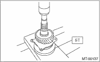

1. Set the ST against the inner race of the bearing, and install the drive shaft.
| ST 398177700 | INSTALLER |
CAUTION:
Do not apply a load in excess of 10 kN (1 ton, 1.1 US ton, 1.0 Imp ton).

2. Install the snap ring on the transfer drive shaft.
3. Inspect the clearance between the snap ring and the ball bearing.